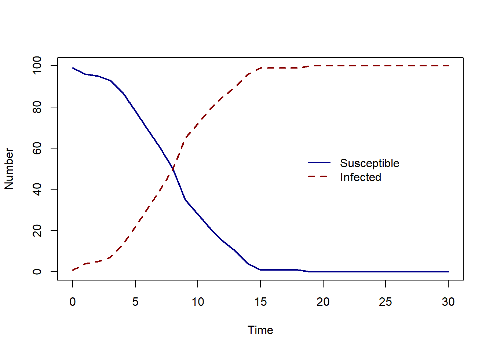
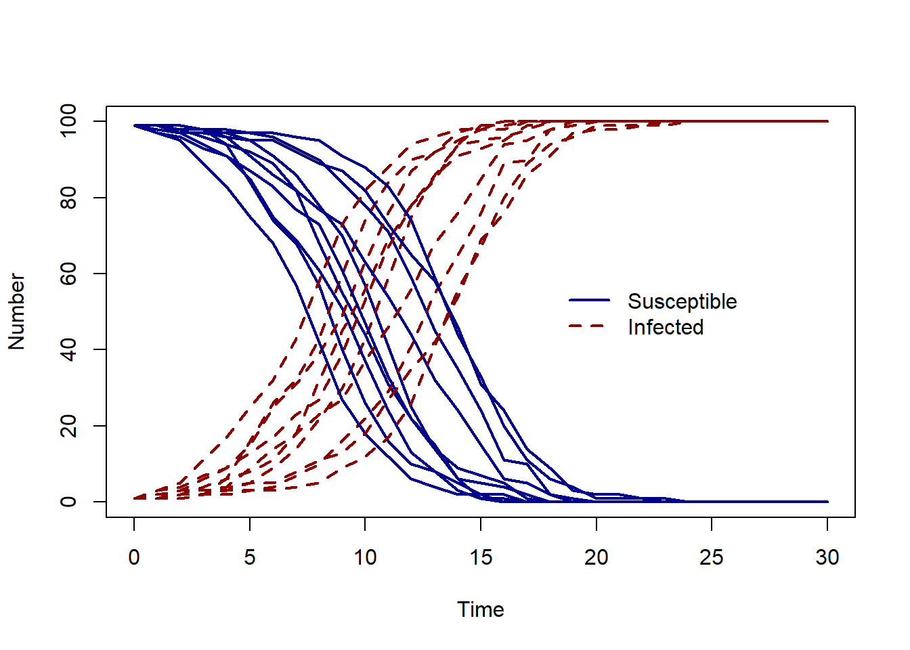

SI_model <- function(pars, initial_state, n_days) {
# assign numbers in each state on day 0
S_t <- initial_state["S0"]
I_t <- initial_state["I0"]
# total pop size
N <- S_t + I_t
# set up data frame to store results
results <- data.frame(time = 0, S = S_t, I = I_t)
# set the day counter = 1
day <- 1
while (day <= n_days) {
# probability of infection
p_t <- 1 - exp(-pars["beta"] * I_t / N)
# how many infections
B_t <- rbinom(1, S_t, p_t)
# update the number of susceptible and infected individuals
S_t <- results$S[day] - B_t
I_t <- results$I[day] + B_t
# store results
results <- rbind(results, c(day, S_t, I_t))
# increase day
day <- day + 1
}
return(results)
}BONUS : Stochastic models
In the previous examples, the models have been deterministic, for a set of assumptions and parameter values, there is no variation in outcome. For stochastic models, For a set of assumptions and parameter values, the outcome can be different. This can arise from stochasticity in parameter values or in chance of events happening.
Here we will learn how to code a simple stochastic model in R. Namely, a stochastic discrete time Susceptible - Infected model.
Model assumptions
In this model, we will assume individuals can either be susceptible or infected (and infectious). We denote the number of susceptible individuals at time \(t\) as \(S(t)\), and the number of infected individuals at time \(t\) as \(I(t)\). The discrete-time stochastic model presented is here was adapted form the more complex discrete time stochastic SEIR model with time varying transmission rate by Lekone et al. (2006).
In this example, we will simulate infection spread over daily time steps, therefore all parameters represent changes at a daily time scale. We assume that individuals become infected at a rate \(\beta\) and that transmission is frequency dependent. The overall rate at which susceptible individuals become infected each day can be written as:
\[\beta I(t)/N\]
where \(I(t)\) is the number of infected individual at the current time \(t\) and \(N\) is the total population size, which we assume is fixed.
In our stochastic model, an event is an individual becoming infected. We assume that the time between events follows an exponential distribution with rate \(\beta I(t)/N\), hence the probability that an event occurs within the next time interval (in this example, a day) is:
\(p(t)= 1 - \exp(-\beta I(t)/N)\),
using the definition of exponential distribution (see XX and XX).
We apply this probability to each of the susceptible individuals to find the number of new infections that occur on day \(t\) using the binomial distribution with number of trials equal number of susceptible individuals and probability defined above,
\[B(t)= Binomial(S(t),p(t)) \]
To predict how infection spreads, we need to repeat this calculation at each time step.
Remember we have \(S(t)\) as the number of susceptible individuals at time \(t\). Then the number of susceptible individuals at the next time step is \(S(t+1)\)).
Therefore, our discrete-time stochastic Susceptible - Infected model can be written as: \[ \begin{aligned} S(t+\Delta t) & = S(t) - B(t) \\ I(t+\Delta t) & = I(t) + B(t) \\ \end{aligned} \] where \(B(t)= Binomial(S(t),p(t))\).
R code
The code below shows a R function which will simulate infection spread from a discrete-time stochastic model.
The inputs are:
pars: a vector containing the model parameter values,initial_state: a vector containing the initial number of the number of susceptible and infected individuals,n_days: the number of days we want to simulate for.
The key part of this R function is the while loop. While the current day is less than the number of days, within the loop we :
- calculate the probability of infection,
- simulate how many individuals become infected,
- store the results of the current day,
- then update the number of days.
These steps within the loop are repeated until the day counter is equal to n_days.
Simulations
To simulate infection spread over 30 days, we will specify \(\beta = 0.6\), \(S(0)=99\) and \(I(0)=1\) and n_days = 30.
pars <- c(beta = 0.6)
initial_state <- c(S0 = 99, I0 = 1)
output <- SI_model(pars, initial_state, n_days = 30)
plot(output$time, output$S, col = "darkblue", lwd = 2,
type = "l", ylim = c(0, 100), ylab = "Number", xlab = "Time")
lines(output$time, output$I, col = "darkred", lwd = 2, lty = 2, type = "l")
legend(18, 60, c("Susceptible", "Infected"),
col = c("darkblue", "darkred"),
lwd = 2, lty = c(1, 2), bty = "n")
As the number of susceptible decreases, the number of infected people increases - the same behaviour we would expect for a Susceptible - Infected deterministic model, but as this is a stochastic model, each time we run our R function, the result will be different.
To repeat the model simulation we will can use a for loop. The code below calls the model function 10 times, each time two lines are added to the plot - the number of susceptible and the number of infected individuals over time.
pars <- c(beta = 0.6)
initial_state <- c(S0 = 99, I0 = 1)
n_days <- 30
# create an empty plot
plot(NA, xlim = c(0, n_days), ylim = c(0, 100), ylab = "Number", xlab = "Time")
legend(18, 60, c("Susceptible", "Infected"),
col = c("darkblue", "darkred"),
lwd = 2, lty = c(1, 2), bty = "n")
# repeat the for loop n_sim = 10 times
n_sims <- 10
for (i in 1:n_sims) {
output <- SI_model(pars, initial_state, n_days)
lines(output$time, output$S, col = "darkblue", lwd = 2,
type = "l", ylim = c(0, 100), ylab = "Number", xlab = "Time")
lines(output$time, output$I, col = "darkred", lwd = 2, lty = 2, type = "l")
}
Try changing the number of simulations n_sims and the value of the transmission rate beta to see how the model output changes.
Further reading
The discrete-time stochastic model presented is this micro-course was adapted form the more complex discrete time stochastic SEIR model with time varying transmission rate by Lekone et al. (2006).
For a model including control measures, see He et al. (2020) for a description of a SEHR (H for hospitalised) model of COVID-19.
He, Sha, Sanyi Tang, and Libin Rong. “A discrete stochastic model of the COVID-19 outbreak: Forecast and control.” Math. Biosci. Eng 17, no. 4 (2020): 2792-2804.
Lekone, Phenyo E., and Bärbel F. Finkenstädt. “Statistical inference in a stochastic epidemic SEIR model with control intervention: Ebola as a case study.” Biometrics 62, no. 4 (2006): 1170-1177.